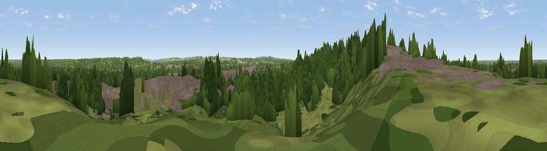

Viewpoint near Aldershot
#38208 in England · top 51% of its area beats it · near AldershotWhere it is
The exact computed spot (SU 87625 51625). Click the marker for map links.
The view, rendered

A 360° render of this exact spot computed from the terrain model, tree cover and land cover — summer colours, afternoon light, calibrated against photographs of famous viewpoints. Real trees, hedges and buildings will differ in detail.
The panorama
Grey silhouette: terrain skyline in each direction (720 bearings, Earth curvature and refraction included). Dashed green: skyline with trees (+15 m) and buildings (+8 m) as obstacles. Blue strip: how far the ground is visible on each bearing.
Where the view opens
Wedge length = distance to the farthest visible ground on that bearing (vegetation-aware). Rings at 10, 25 and 50 km.
What fills the view
49% woodland · 27% built-up · 22% grassland · 1% water ·
Angular shares of the visible panorama (visual magnitude), not map area. Landscape diversity 0.49 (0–1 Shannon).
Key numbers
More beautiful places nearby
The staircase of upgrades: each row has a higher view potential than everything closer. Driving times are estimates from straight-line distance, calibrated against real road routing — check an actual route before setting out.
| Place | Direction | Drive | Score |
|---|---|---|---|
| Viewpoint near Ash | E · 3 km | ~6 min | 36.9 |
| Viewpoint near Ash | E · 3 km | ~8 min | 39.5 |
| Hungry Hill | WSW · 4 km | ~8 min | 57.2 |
| Viewpoint near Upper Hale | WSW · 4 km | ~9 min | 58.3 |
| Viewpoint near Puttenham | SE · 5 km | ~11 min | 62.0 |
| Viewpoint near Wanborough | ESE · 8 km | ~15 min | 65.5 |
| Viewpoint near Compton | ESE · 9 km | ~18 min | 66.7 |
| Viewpoint near Hascombe | SE · 18 km | ~31 min | 70.1 |
51.25707, -0.74569 · source: screening · position refined by local search. Computed location — check access rights before visiting.